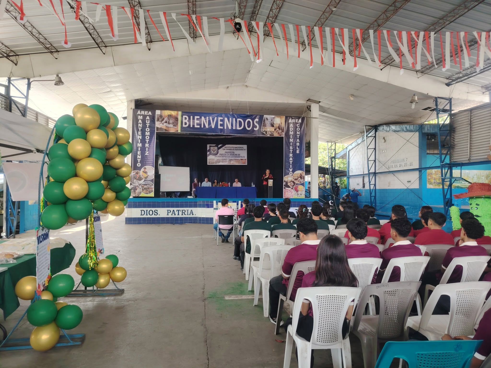
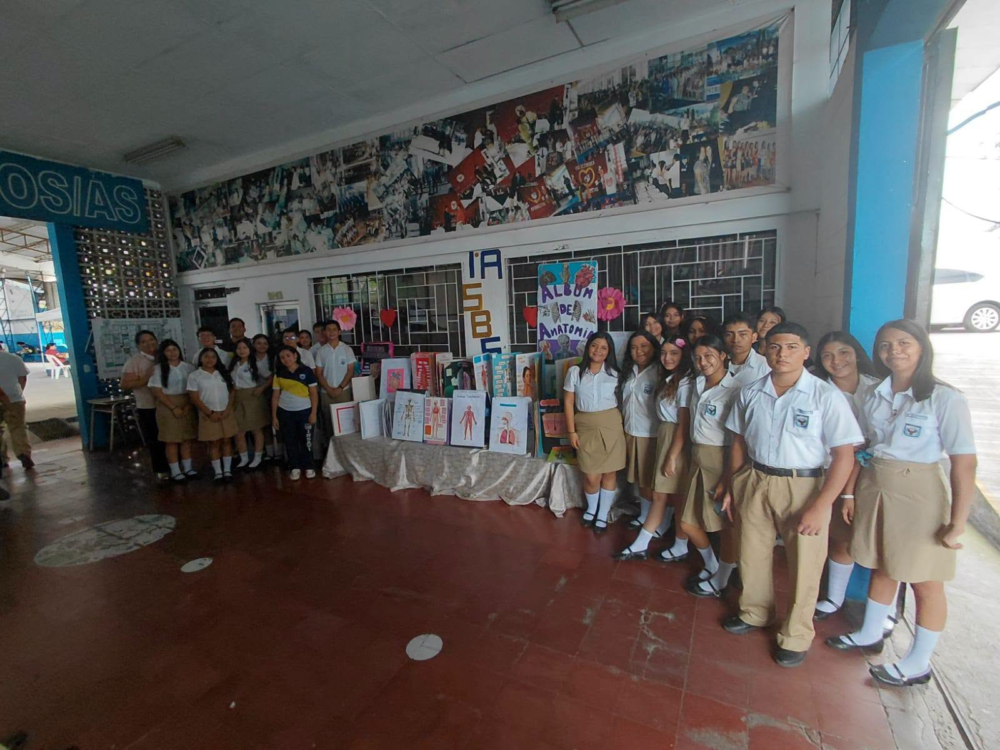
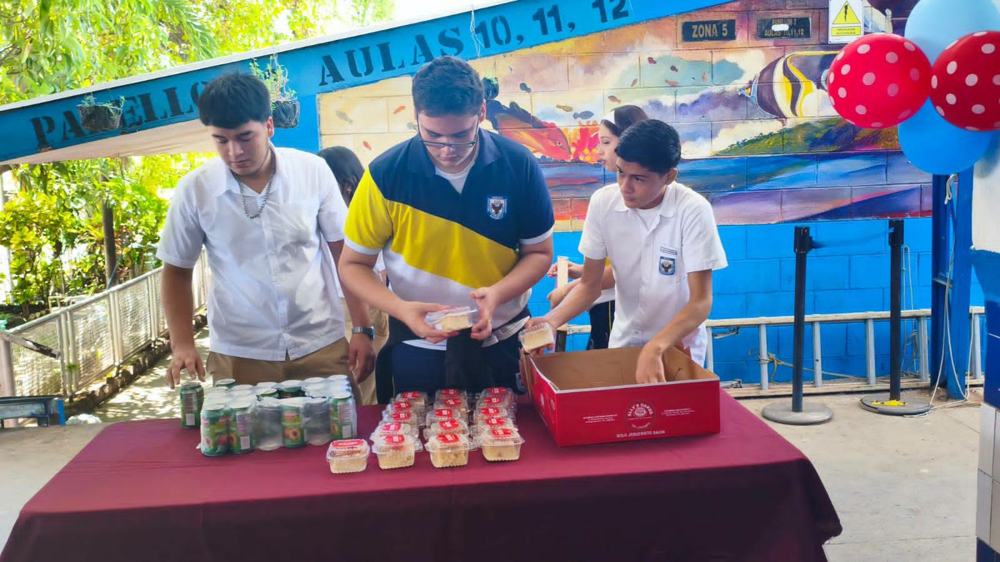
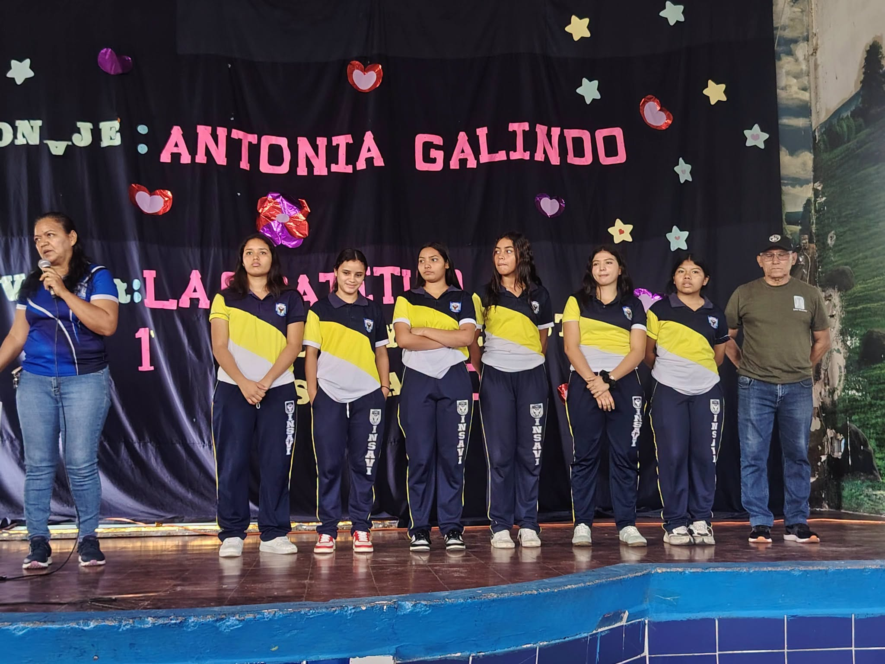
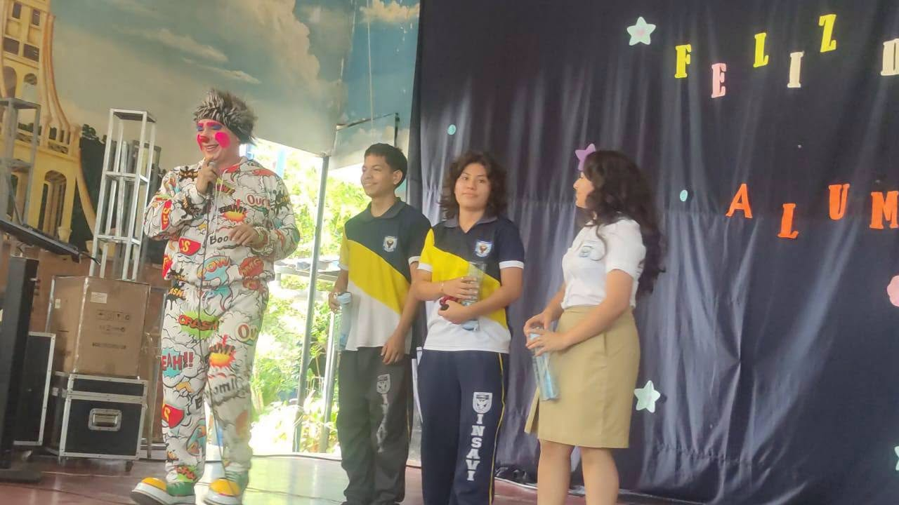
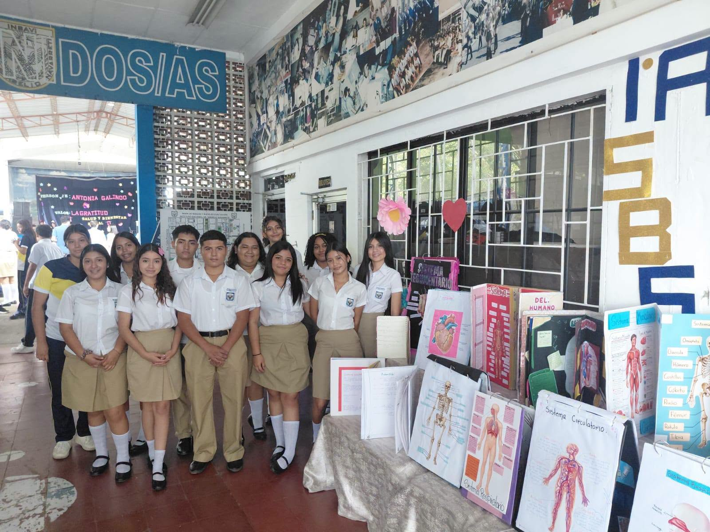

Más de seis décadas forjando juventudes líderes, competentes y éticas. Ofrecemos educación media de alto nivel en Bachilleratos Generales y Técnicos Vocacionales con instalaciones y talleres de vanguardia.


Nuestros estudiantes desarrollando maquetas biomédicas y proyectos de investigación aplicada.
El Instituto Nacional Dr. Sarbelio Navarrete (INSAVI) es un referente histórico en el departamento de San Vicente y en toda la zona paracentral de El Salvador, caracterizado por una rigurosa formación académica, disciplina y valores cívicos.
Formar integralmente a la juventud con solvencia científica, técnica y humana, fomentando la inclusión, el pensamiento crítico y el compromiso social.
Ser la institución de educación media líder a nivel nacional, destacada por la calidad e innovación de sus egresados y su aporte al desarrollo del país.
Presente en el corazón de nuestro escudo oficial, el Águila Verde encarna la estirpe, la tenacidad y la elevación moral e intelectual de la comunidad insavina.
Con sus alas extendidas sobre el libro del saber y bajo el sol radiante de Cuscatlán, recuerda a cada alumno que no existen barreras insuperables cuando se tiene la disciplina de prepararse y el valor de soñar en grande.
Capacidad de proyectar el futuro y liderar con sabiduría.
Perseverancia frente a cualquier adversidad académica.
Amor por San Vicente y entrega a nuestra patria.

Combinamos la teoría rigurosa con prácticas en laboratorios, talleres especializados y simulaciones empresariales reales.
Investigación biomédica, comprensión profunda de los sistemas anatómicos y experimentos interactivos liderados por los estudiantes.

Comercio & GestiónFerias productivas, creación de planes de negocio viables, comercialización de productos y fomento de la mentalidad emprendedora.

Ingeniería & TecnologíaPráctica intensiva en mecánica automotriz, diagnóstico computarizado, desarrollo de software y administración de sistemas contables.
Modalidades diurnas diseñadas para insertarse con éxito en la fuerza laboral o continuar estudios superiores universitarios.
Sólida preparación científica, matemática y humanística pensada para el ingreso y éxito en carreras universitarias.
Diagnosis, mantenimiento preventivo y reparación experta de motores de combustión, sistemas eléctricos e híbridos.
Programación web y móvil, bases de datos relacionales, mantenimiento de equipos de cómputo y redes locales.
Herramientas técnicas de contabilidad comercial, gestión de costos, legislación tributaria salvadoreña y auditoría.
Atención al cliente de nivel internacional, guiado turístico patrimonial, hotelería y logística de congresos y eventos.
Primeros auxilios avanzados, enfermería preventiva y comunitaria, signos vitales y promoción de la salud pública.
Actividades académicas, ferias culturales, celebraciones y el entusiasmo que define el día a día en INSAVI.


Estamos a tu disposición para consultas de matrícula, constancias y trámites académicos.